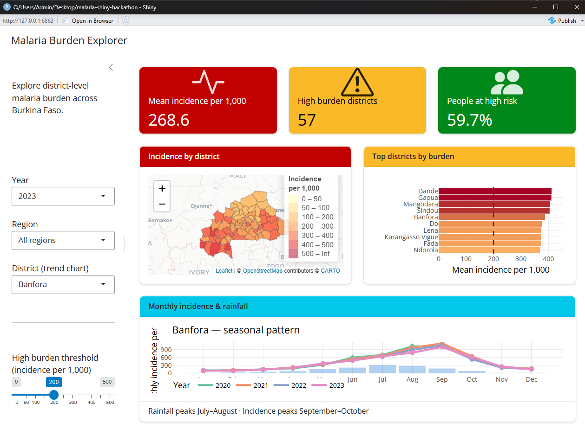

In this session, you will build an interactive malaria dashboard from scratch with R Shiny. The finished Malaria Burden Explorer lets a user filter district-level data, inspect key indicators, explore a map, compare high-burden districts, examine seasonal trends, and download the filtered data.
The workshop uses a real Burkina Faso district boundary file and simulated epidemiological indicators. It is designed for learning: the patterns are realistic, but the indicator values must not be used for programme decisions.
Learning objectives
By the end of the session, you will be able to:
- Explain how the user interface and server communicate in a Shiny application.
- Build a responsive dashboard with
bslibsidebars, cards, columns, and value boxes. - Connect user inputs to filtered data with reactive expressions.
- Create interactive maps with
leafletand charts withplotly. - Update several dashboard components from one shared reactive dataset.
- Add a theme, dark-mode control, and data download.
- Prepare a Shiny application for deployment.
Before the session
You should be comfortable with basic R syntax, data frames, pipes, and dplyr functions such as filter(), mutate(), group_by(), and summarise(). Previous Shiny experience is not required.
Install the following software:
- R
- RStudio Desktop
- Git, if you want to clone the repository
Get the project
Download the 09_shiny folder from the AMMnet repository, or clone the complete AMMnet Hackathon repository:
git clone https://github.com/AMMnet/ammnet-hackathon.git
cd ammnet-hackathon/09_shinyOpen the 09_shiny folder in RStudio. It contains the starter app, completed app, and prepared training data. The instructions are in this post, with the full interactive lesson linked above.
Install the R packages
Run this once in the R console:
packages <- c(
"shiny", "bslib", "tidyverse", "leaflet", "sf", "plotly",
"DT", "bsicons", "scales", "htmltools"
)
install.packages(
packages[!packages %in% rownames(installed.packages())]
)The application loads these packages at the top of app.R:
library(shiny)
library(bslib)
library(tidyverse)
library(leaflet)
library(sf)
library(plotly)
library(DT)
library(bsicons)
library(scales)
library(htmltools)The training data
The data/ folder contains three R objects:
malaria_data.rds: monthly district indicators for 2020–2023annual_summary.rds: annual summary indicatorsbfa_districts.rds: Burkina Faso district boundaries
The data cover 70 districts across 13 regions for four years, giving 3,360 district-month records. Malaria incidence, rainfall, and insecticide-treated net coverage are simulated. The district geometry comes from the Malaria Atlas Project.
Load the files near the top of app.R:
malaria_data <- readRDS("data/malaria_data.rds")
annual_df <- readRDS("data/annual_summary.rds")
district_shp <- readRDS("data/bfa_districts.rds")Check that the data loaded correctly:
glimpse(malaria_data)
cat("Districts:", n_distinct(malaria_data$district), "\n")
cat("Regions:", n_distinct(malaria_data$region), "\n")
cat("Years:", paste(sort(unique(malaria_data$year)), collapse = ", "), "\n")
plot(
sf::st_geometry(district_shp),
main = "Burkina Faso districts"
)The simulated indicator values are suitable for exercises and software demonstrations. Do not interpret them as observed malaria estimates or use them for operational decisions.
How a Shiny app works
A basic Shiny application has three parts:
- User interface: controls what the user sees, including inputs, layout, and placeholders for output.
- Server: filters data, calculates values, and creates output in response to user input.
shinyApp(): joins the user interface and server and launches the application.
The user interface and server communicate through matching IDs:
User interface Server
selectInput("year", ...) input$year
leafletOutput("map") output$map <- renderLeaflet({...})
plotlyOutput("bar_chart") output$bar_chart <- renderPlotly({...})IDs are case-sensitive. If the UI contains plotlyOutput("trend"), the server must create output$trend, not output$Trend.
Open app.R and select Run App in RStudio. Leave the app open while you work. Saving app.R reloads the application and exposes errors early, when they are easier to diagnose.
Stage 1: Build the layout
Start with the visual skeleton. bslib provides a modern responsive layout without requiring custom HTML or CSS.
The dashboard uses:
page_sidebar()for the page and filter panellayout_columns()for responsive rowsvalue_box()for key indicatorscard()for the map and charts
A minimal skeleton looks like this:
ui <- page_sidebar(
title = "Malaria Burden Explorer",
sidebar = sidebar(
"Filters go here"
),
layout_columns(
value_box("Mean incidence per 1,000", "--"),
value_box("High-burden districts", "--"),
value_box("Mean ITN coverage", "--")
),
layout_columns(
card(
card_header("Incidence by district"),
leafletOutput("map", height = 380)
),
card(
card_header("Top districts by burden"),
plotlyOutput("bar_chart", height = 380)
)
)
)
server <- function(input, output, session) {
}
shinyApp(ui, server)At this stage the dashboard contains placeholders, but no data or reactivity. Run it anyway and confirm that the structure responds when you resize the window.
Stage 2: Add inputs and reactive indicators
Add controls to the sidebar for year, region, district, burden threshold, and the number of districts shown in the bar chart.
Every input needs:
- a unique
inputId - a clear label
- a sensible default value
Create one reactive expression that filters the data. All downstream outputs can reuse it:
filtered_data <- reactive({
data <- malaria_data |>
filter(year == input$year)
if (input$region != "All regions") {
data <- data |>
filter(region == input$region)
}
data
})Call a reactive expression with parentheses: filtered_data(). Using filtered_data without parentheses refers to the function itself, not the filtered rows.
Use renderText() to calculate the value boxes from filtered_data(). This stage connects the controls and data for the first time, so test every input before adding more outputs.
Stage 3: Add the map and ranked chart
The map combines the filtered indicators with the district geometry and displays incidence as a choropleth. The ranked bar chart summarises the highest-burden districts.
You will use:
leafletOutput()andrenderLeaflet()for the mapplotlyOutput()andrenderPlotly()for the chart- a colour-palette helper to keep map bins consistent
- a summary helper to calculate the top districts once
Keep repeated transformations in small helper functions. The server can then focus on connecting reactive data to outputs rather than repeating the same grouping and colour logic.
After this stage, check that changing the year or region updates the value boxes, map, and ranked chart together.
Stage 4: Add trends and polish
Complete the dashboard with a monthly district trend that compares rainfall and malaria incidence. The simulated data show rainfall peaking in July–August and incidence peaking later, in September–October.
The final stage also adds:
- a
bs_theme()visual theme - a light/dark-mode control
- an AMMnet logo
- a CSV download button
- full-screen controls for the map and charts
Open app_teacher.R and select Run App to compare your work with the completed application. Return to app.R before making your own changes; the starter file is intended to become your version of the dashboard.
Exercises
Try these extensions after the core dashboard works:
- Add a choice between malaria incidence and ITN coverage for the map.
- Let the user choose 5, 10, 15, or 20 districts for the ranked chart.
- Add a searchable
DTtable of district summaries. - Change the Bootswatch theme.
- Adapt the filters and labels for a dataset from another country.
Debugging checklist
When an output does not update, check the following in order:
- Does the UI output ID exactly match the server output ID?
- Does each input ID exist before the server reads it?
- Did you call reactive expressions with parentheses?
- Does the filtered data contain rows for the selected inputs?
- Are all required packages loaded?
- Are file paths relative to the project folder?
- What is the first error shown in the R console?
Fix the first error before working through later messages; later errors are often consequences of the first one.
Deploy the dashboard
Once your completed application is saved as app.R, it can be deployed to shinyapps.io with the rsconnect package:
install.packages("rsconnect")Create a shinyapps.io account, connect it to RStudio under Tools → Global Options → Publishing, and follow the account’s token instructions. Then deploy from the project folder:
rsconnect::deployApp(
appDir = ".",
appName = "malaria-burden-explorer-bfa"
)Never commit a shinyapps.io token or secret to GitHub. Before deploying real programme data, confirm that publication is permitted and that the application does not expose sensitive or identifiable information.
See Posit’s shinyapps.io getting-started guide for current account and deployment instructions.
What you built
By completing the four stages, you have used the main patterns behind a production Shiny dashboard:
Layout page_sidebar(), layout_columns(), card(), value_box()
Inputs selectInput(), sliderInput()
Reactivity reactive(), observeEvent()
Indicators renderText(), textOutput()
Map renderLeaflet(), leafletOutput()
Charts renderPlotly(), plotlyOutput()
Download downloadHandler(), downloadButton()
Deployment rsconnect::deployApp()The same structure can be adapted to routine surveillance, intervention coverage, entomology, climate, or model-output data. Start with a small working dashboard, keep one source of filtered reactive data, and add features only after each stage works.